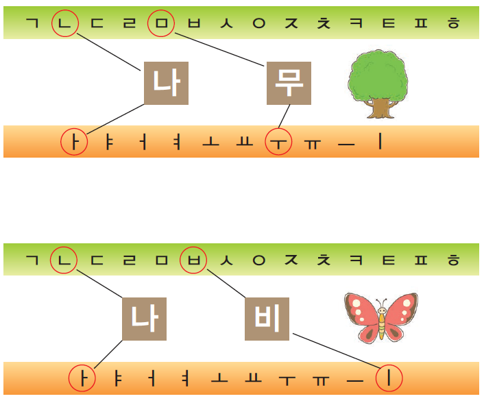

- 기본 모음 Simple Vowels
- 기본 자음 Simple Consonants
- 음절 만들기 Syllable Formation
- 복합 모음 1 Compound Vowels 1
- 복합 모음 2 Compound Vowels 2
- 쌍자음 Double Consonants
- 종합연습 1 Excercise 1
- 받침 1 Final Consonants - Bachim 1
- 받침 2 Final Consonants - Bachim 2
- 종합연습 2 Exercise 2
3.음절 만들기 Syllable Formation
가 나 다 라 마 바 사 아 자 차 카 타 파 하
I strongly recommend to practive this until you remember the sound. "가나다라마바사아자차카타파하"
a. Let's practice
미소 [miso] : smile
사다 [sada] : buy
가다 [gada] : go
오다 [oda] : come
보다 [boda] : see
자다 [jada] : sleep
